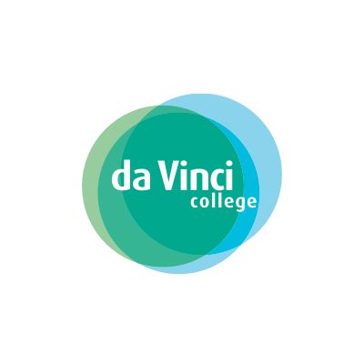

Ik hoop op deze opleiding te leren software taal te begrijpen maar ik hoop ook te leren om socialer te zijn en samen te kunnen werken met mensen.
Ik werk nu elke dinsdag en vrijdag bij de action en ik vindt zelf dat ik daar wel een beetje geleerd hebt sociaal te zijn tegen mensen die ik niet ken maar dat is vooral tegen volwassenen. Voor de rest heb ik bij de action niks geleerd dat ik kan toepassen bij deze opleiding. Mijn vooropleiding waren de eerste 4 jaar wel te doen maar nadat m'n klas allemaal geslaagd waren en ik nog een jaartje moest doen raakte ik in een dip waardoor ik meerdere keren weken tot maanden niet naar school kon omdat ik me zo slecht in mn vel voelde. Dit komt omdat ik in de nieuwe klassen niemand kende en ik niet goed tegen grote veranderingen kan. Ik heb op mijn vooropleiding ook niet veel geleerd aangezien ik bijna nooit huiswerk deed en amper voor toetsen leerde.